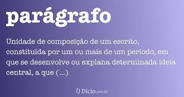

Parágrafos e Quebras de Linha
Você pode descrever um paráfrafo de qualquer jeito
Basta colocar tudo no meio do par de tags <p> e </p>
Se precisar quebrar o texto de algum lugar específico
como esse, você pode utilizar a tag <br>

Vamos adicionar alguns simbolos especiais:
® -- Marca registrada
© -- Copyright
™ -- Marca registrada
€ -- Euro
£ -- Libra
¥ -- Yen (Japão)
¢ -- Centavos americano
Δ -- Delta
↑ e ↑ -- Seta para cima
Vamos adicionar alguns emojis:
Site de emojis
🖖 🤓 🚀